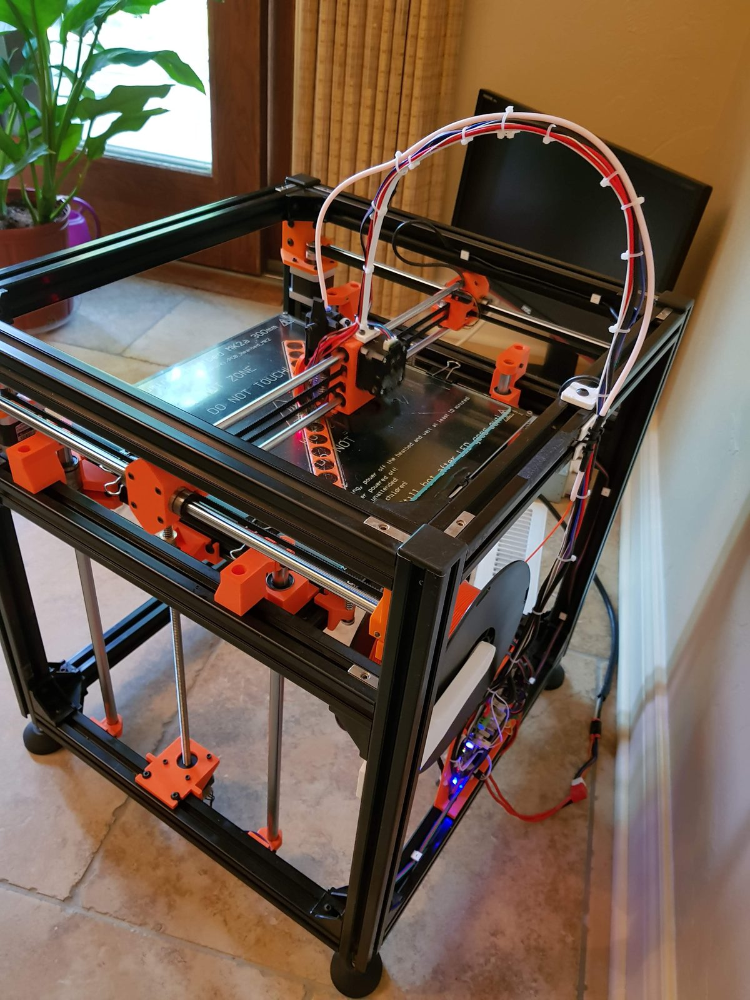
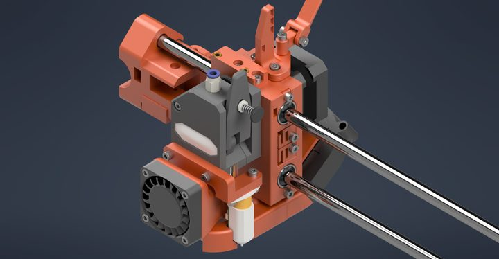
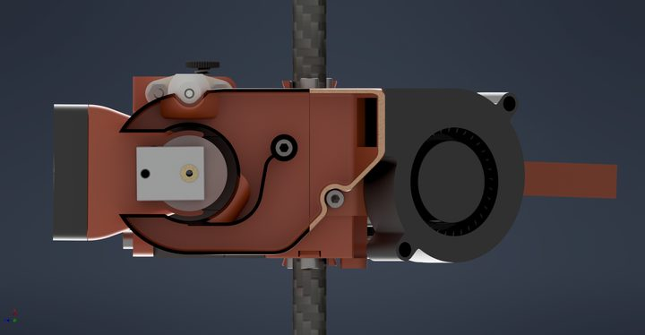

2014 – 2019
Custom 3D Printers: HyperCube Evolution & RailCore
The printers behind everything else, from a PrintrBot at 14 to a HyperCube Evolution with my own balanced direct-drive printhead and a RailCore I built.
- CoreXY
- RepRapFirmware
- Duet
- Printhead design
- Open source

My first printer was a PrintrBot Simple at 14, and I designed most of my early upgrades for it. Since then I've built and reworked a series of machines: a HyperCube Evolution, a RailCore 300 ZL (an all-metal CoreXY with a Duet, three-point bed leveling and my own upgrades: accelerometer, filament sensor, fan shroud, tension blocks and hotend mount), and the V-Labs Ender 3 farm.
HyperCube Evolution
The HyperCube Evolution (HEVO) is the open-source successor to the HyperCube: a CoreXY belt system built around metric T-slot extrusion. The recommended controller was a RAMPS board with cheap, loud stepper drivers. I used a Duet WiFi running RepRapFirmware instead. That was my first RRF machine, in 2017, and RRF has run my printers ever since.


Balanced direct-drive printhead
The stock HEVO uses a Bowden extruder. The direct-drive heads I found online all hung the motor off one side, so they twisted the carriage. My design puts the stepper on the opposite side from everything else so the head is balanced. The motor shaft passes straight through the block.
- Runs on 8 mm steel or 10 mm carbon fiber rods
- Wedges hold the eccentric bushings, with adjustable interference to remove play
- Integrated part cooling and belt tensioning
I also added a custom electronics enclosure, cable chains and a filament sensor.





